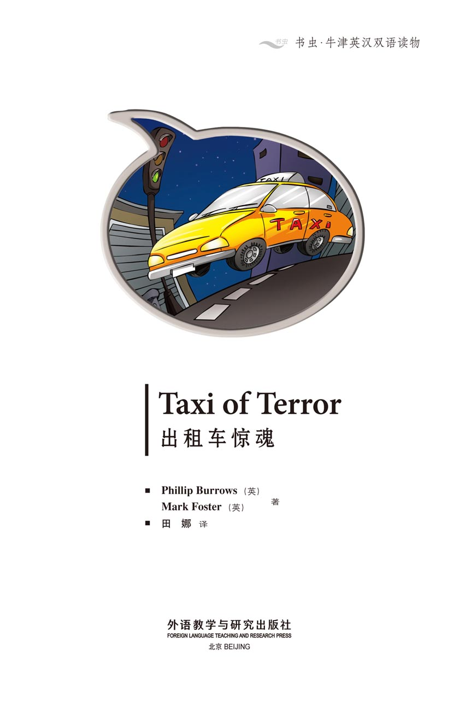
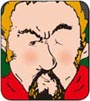
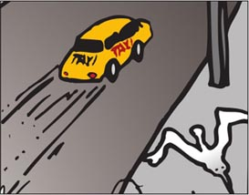
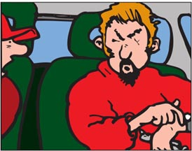
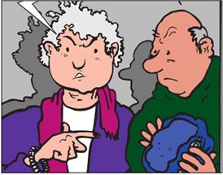
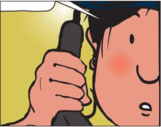
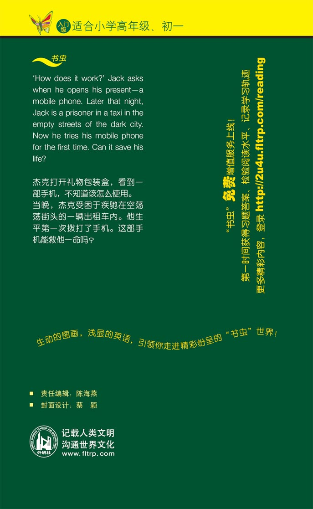

扉页

版权页
京权图字：01-2013-7812
Published by arrangement with Oxford University Press for sale in the People's Republic of China only and not for export therefrom. This edition is for sale in the mainland of China only, excluding Hong Kong SAR, Macao SAR and Taiwan.
© Oxford University Press 2008
Oxford is a registered trademark of Oxford University Press
图书在版编目（CIP）数据
出租车惊魂：英汉对照／（英）伯罗斯（Burrows, P.），（英）福斯特（Foster, M.）著；田娜译．—北京：外语教学与研究出版社，2013.11
（书虫·牛津英汉双语读物）
书名原文：Taxi of terror
ISBN 978-7-5135-3783-4
Ⅰ．①出… Ⅱ．①伯…②福…③田… Ⅲ．①英语—汉语—对照读物②短篇小说—英国—现代 Ⅳ．①H319.4：I
中国版本图书馆CIP数据核字（2013）第272375号
出版人 蔡剑峰
责任编辑 陈海燕
封面设计 蔡 颖
出版发行 外语教学与研究出版社
社 址 北京市西三环北路19号（100089）
网 址 http://www.fltrp.com
版 次 2013年12月第1版
书 号 ISBN 978-7-5135-3783-4
制售盗版必究 举报查实奖励
版权保护举报电话：（010）88817519
内容简介
内容简介
“祝你好运，杰克。别忘了我们！”杰克的同事们与他告别。他们为杰克举办了一个派对，因为他找了一份新工作，要离职了。杰克收到了一张卡片和一份礼物——一部手机。杰克的同事们有些伤感，不过派对很棒，他们都跳了几个小时的舞。
然后，杰克离开了派对。他累了，想要回家。“好冷。”他想。他想找辆出租车，可是没能找到。他步行了很长时间，整个人疲惫不堪。后来，他终于看到一辆出租车。好极了！他终于可以回家睡觉了！
然而，漫漫长夜才刚刚拉开帷幕——杰克将在出租车中惊恐度过这漫漫长夜！
目录
TAXI OF TERROR

GLOSSARY 词汇表
GLOSSARY
词汇表
calm adj. not angry 镇定的，镇静的
dangerous adj. something that can hurt you is dangerous 危险的
enjoy v. like doing something 喜爱；享受……的乐趣
hurt v./adj. be or cause to be in pain （身体某部位）感到疼痛；使感到疼痛
kind adj. if you are good to other people you are kind 友善的
loud adj. making a lot of noise 大声的；响亮的
luck n. you have luck if good things happen to you 运气
ouch exclam. what you say when you are in pain （表示疼痛）哎哟
seagull n. a bird that lives by the sea 海鸥
tunnel n. where a road goes under the ground 隧道
turn v. change the way you are going 转向
ACTIVITIES 阅读练习
Taxi of Terror
ACTIVITIES
阅读练习
ACTIVITIES
Before Reading
1 Look at the front and back covers of the book. Now complete these sentences.
1）The taxi in the story is...
a □ black.
b □ yellow.
c □ blue.
2）Imagine you are the taxi driver. You are...
a □ afraid.
b □ happy.
c □ not interested.
3）The story happens...
a □ in a town.
b □ in the country.
c □ not in a or b.
4）At the end of the story the police catch...
a □ a bad man.
b □ the taxi driver.
c □ Jack.
ACTIVITIES
While Reading
1 Answer these questions.
1）Why is Jack leaving his job?
2）How does Jack decide to get home?
3）Where does the taxi stop?
2 Answer these questions.
1）Does the Wolf want money?
2）Does the taxi turn right or left next to the hospital?
3）Write a description of the Wolf.

4）What is the number of the Taxi?
3 Are these sentences true (T) or false (F)?
1）He gets in the boot of the taxi.
T □／F □
2）He phones his mum.
T □／F □
3）He escapes from the boot.
T □／F □
4）He talks to a policeman.
T □／F □
5）He tells the police the Wolf has a small nose.
T □／F □
6）He hears a clock.
T □／F □
4 Complete the sentences with the following words:
airport beard boot plane seagulls
1）

Now I can hear lots of..... Are we near the sea?
2）

Drive to the..... I must get on that.....
3）

Are you looking for that bad man with the..... ? He's over there.
4）

Can someone open the..... ?
ACTIVITIES
After Reading
1 Answer these questions.
1）Who
a ... does the Wolf put in the boot of the taxi?
b ... does Jack call on his mobile phone?
c ... gets knocked over by the Wolf?
d ... says: 'That's ￡16.50 please'?
2）What
a ... almost crashes into the taxi?
b ... is the Wolf trying to catch?
c ... can Jack hear at the dump?
d ... do the police look at on the wall?
3）Where
a ... does the taxi go over some bumps?
b ... is Jack at the beginning of the story?
c ... do the police catch up with the Wolf?
d ... does the Wolf get in the taxi?
2 Put these sentences in the correct order.
a □ The taxi drives next to a rubbish dump.
b □ The taxi arrives at the airport.
c □ Jack calls the police with his mobile phone.
d □ The taxi drives through a tunnel.
e □ The taxi drives near a clock.
3 Use these words to fill in the gaps.
airport boot catch gun hear job mobile phone pleased police taxi
Jack is leaving his old _____________ His friends give him a _____________ as a leaving present. He is very _____________ On his way home Jack falls asleep in a _____________. Suddenly at a traffic light, a dangerous man called the Wolf gets in the taxi – he has a _____________. The taxi driver does what the Wolf tells him. Jack wakes up and is soon put in the _____________ of the taxi. Then he has an idea – he calls the _____________ with his phone. Jack tells them what he can _____________ from inside the boot. The police find out that the taxi is driving to the _____________. The police get there just in time to _____________ the Wolf.
TRANSLATION 参考译文
TRANSLATION 参考译文
Taxi of Terror
出租车惊魂
GOOD LUCK JACK
Don't forget us, Jack.
Are you excited about your new job?
You're going, Jack. I'm sorry.
Here's a leaving card from us all.
Thank you for the card. My new job's great. But I'm sorry because I'm leaving you.
（条幅上写着：祝你好运，杰克）
别忘了我们，杰克。
你的新工作让你很兴奋吗？
你要走了，杰克。我很难过。
这是离别之际我们大家送你的卡片。
谢谢你们的卡片。我的新工作非常棒。不过想到要离开你们我就很难过。
Quiet, please. I want to say something.
Bang! Bang!
Jack's leaving and we're all very unhappy. Here's a present for you. You can use it in your new job.
A mobile phone! Thanks, very much. You're all very kind.
请静一下。我想说两句。
（！！）
杰克要走了，我们都很不开心。这是送给你的一份礼物。在新的工作中你用得上。
手机！非常感谢！你们大家对我真好！
How does it work? Do you know?
Beep!
Oh, it's talking to me.
Now I can phone you all – from my car! This is a very good present. Thank you very much.
Good luck, Jack.
它怎么使用？你知道吗？
哔！
哇，它跟我说话呢。
这下我在车里就可以给你们大家打电话了！这是一件非常棒的礼物。非常感谢大家！
祝你好运，杰克。
Everybody is having a good time.
Goodbye, everyone. Thank you, again, for my present.
See you soon.
Take care.
Enjoy yourself.
It's late – but I don't have to work tomorrow. Now, how do I get home?
It's cold. Where's a taxi?
大家都玩得很开心。
再见，诸位。再次感谢你们送我的礼物。
回头见！
保重！
过得开心！
夜深了，不过我明天不用去上班。唉，我怎么回家呢？
好冷。哪儿有出租车？
Jack cannot find a taxi. He walks for a long time and gets very tired.
At last, Jack sees a taxi.
I live at 57 Park Road. Can you take me there?
Of course. Get in. You look tired.
Yes, I'm very tired.
It's very quiet tonight, sir. You're only my second passenger... Sir?
杰克找不到出租车。他步行了很长时间，疲惫不堪。
杰克终于看到一辆出租车。
我住在公园路57号。你能送我去那儿吗？
没问题。上车吧。你看上去累了。
是啊，我累坏了。
今晚可真安静，先生。你是我拉的第二位乘客……先生？
It's late. He needs his bed.
The taxi stops at a traffic light. Suddenly...
What the...
Say nothing.
Do what I tell you... or you're dead.
夜深了。他该睡觉了。
出租车在一个交通信号灯前停了下来。突然……
怎么……
给我闭嘴。
照我说的做……不然你就死定了。
When the lights are green, drive fast.
I'm watching you. Don't be clever.
Go left and then right.
Left here, fast.
... then right next to the hospital.
灯一变绿就马上给我开车。
我看着你呢。别耍小聪明。
左转然后右转。
这里左转，快一点。
……到医院那里右转。
What do you want? I've got some money, but not very much. Take it.
I don't want your money. I...
Screech!
Oh no! Get out of the way.
你想要什么？我有一些钱，但是不多。拿走吧。
我不要你的钱。我……
（嘎！）
哦，不好！快闪开！
Screech!
Crash!
Ow!
Clonk!
Don't shoot! We're driving too fast. Can we drive slowly?
Quiet! OK. Just drive... carefully.
Ow! What's happening?
（嘎！）
（砰！）
哎哟！
（咚！）
别开枪！我们开得太快了。能慢点儿开吗？
别喊！好吧。只管开你的车……小心点儿。
哎哟！怎么回事？
He has a gun! I don't understand. Am I dreaming?
At the roundabout turn right.
The taxi driver drives very carefully now.
OK. I must keep calm. Everything's OK. He can't see me here.
他有枪！我搞不懂了。我在做梦吗？
在环岛那儿右拐。
这会儿出租车司机开得非常小心。
好吧，我必须保持冷静。不会有事儿的。他看不到我在这儿。
I must do something... but what?
Taxi 250. Can you hear me?
This is taxi 250. They want to talk to me.
Well, they can't.
Rip!
Jack is not tired now. Suddenly, he has an idea.
I know what to do. People do this on television. I can do it.
G-g-give me the gun... slowly. I don't want to hurt you.
Stop the taxi.
我得做点儿什么……但是做什么呢？
250号出租车。你能听到我说话吗？
这车就是250号。他们有话跟我说。
哦，不行。
（刺啦！）
杰克现在不困了。突然，他有了个主意。
我知道该怎么做了。电视里的人就是这么干的。我也可以。
给……给……给我枪……慢慢地递给我。我不想伤害你。
停车。
Don't do that. I don't like surprises.
Now, get out of the taxi. Slowly.
Driver, open the boot of the taxi.
What?
Just do it!
How can we get home? Look there's a taxi.
I've got a gun. You haven't! Do you want me to shoot?
No. Please. Don't shoot.
少来这套。我可不吃诈唬。
好了，下车。慢慢地下来。
司机，把后备箱打开。
什么？
只管按我说的做！
我们怎么回家呢？看，那儿有一辆出租车。
我有枪，你可没有！你想让我开枪吗？
不，求求你了，别开枪。
You – get in the boot.
It's too small.
Get in, you dog, or I shoot.
Slam!
Now drive! Fast!
Screech!
They're going fast.
He's holding a gun!
A gun? No! It's a banana.
A banana?
你——到后备箱里去。
太小了。
进去，你这混蛋，不然我就开枪了。
（砰！）
现在开车！开快点儿！
（嘎！）
他们开得真快。
他拿着枪呢！
枪？不！那是一根香蕉。
香蕉？
It's too small in here and my leg hurts. I'm not clever. What can I do?
Something's hurting me. What is it? I must move it.
It's my new phone. Yes! I can phone for help.
I must stop to get some petrol.
OK, you can stop but you must stay in the taxi.
这儿空间太小了，我的腿很疼。我太笨了。我该怎么办？
有东西硌着我，是什么东西？我得把它挪开。
是我的新手机。对了！我可以打电话求救。
我得停车加点儿油。
好吧，你可以停车，但是必须待在车上。
I'm taking the keys. I don't want you to drive away.
Beep!
Beep!
What's that? Is there something wrong with your car?
No!
Drive!
You're not paying!
钥匙给我。我可不想让你把车开跑了。
哔！
哔！
什么声音？你的车出故障了吗？
没有！
开车！
你还没给钱呢！
Now, I want the police. 9... 9...9...
Beep!
Hello. Police.
Yes! It works. We're all right now.
Jack phones the police station and talks to a policewoman.
Can I help you?
A man's in our taxi. He's got a gun. I don't know where he wants to go. He's very dangerous.
嗯，我要打电话给警察局。9……9……9……
哔！
你好，警察局。
好，接通了！我们现在安全了。
杰克给警察局打电话，一位女警官负责接听。
您有什么事？
我们的出租车里有一个男人。他有一把枪。我不知道他想去哪儿。他是个非常危险的人物。
OK, keep calm. What's your name and where are you?
I'm Jack and I'm in the boot of the taxi.
OK, Jack. Tell me about the man.
He's little and thin, and he has a bad eye and red hair. He has a little beard.
You know who that is? It's the Wolf.
Jack, that man's very dangerous. He's called the Wolf and we're looking for him. Be careful. We must find where you are. Can you see anything?
好的，请保持冷静。你叫什么名字？你在哪里？
我叫杰克，我在出租车的后备箱里。
好的，杰克。请告诉我那个人长什么样。
他个儿不高，瘦瘦的，有只眼睛不太好，红头发。他留着小络腮胡。
你知道是谁吗？是那个“独眼狼”。
杰克，那个人非常危险。他的外号叫“独眼狼”，我们正在追捕他。你小心点儿。我们必须弄清楚你在什么地方。你能看到周围什么东西吗？
I can't see anything but I hear a clock. It sounds very loud and very near.
Ding-dong!
Can you see a big clock?
There are lots in the town.
We're going through a tunnel, I think.
We're driving over lots of bumps. Is it a railway crossing?
我什么都看不见，不过我能听到钟声。钟声很大，感觉离我很近。
（叮咚！）
你看见一个大钟吗？
城里有很多大钟。
我觉得我们正穿过一条隧道。
我们正开过坑坑洼洼的地面。是铁道路口吗？
Look! Here's a big clock. Here's the tunnel. And here's a railway crossing. They must be on this road.
Now I can hear lots of seagulls. Are we near the sea?
We're wrong. The sea isn't on that side of town. It's over here.
No! Look! We are right. The city rubbish dump's next to the road. Just here. There are always seagulls on the dump. Also, the dump's near the airport! Quick, let's catch the Wolf.
看！这儿有一个大钟，这儿是那条隧道，这儿有个铁路道口。他们一定是在这条路上。
现在我能听到很多海鸥的叫声。我们在海边吗？
我们搞错了。大海不在城那边，而是在这边。
不！瞧！我们是对的。城市的垃圾站路边，就是这儿。垃圾堆上总有海鸥，而且垃圾站离机场很近。快点儿，我们去抓“独眼狼”！
Screech!
It's about five minutes to the airport. We must stop the Wolf.
Drive to the airport. I must get on that plane.
The Wolf races into the airport.
The car isn't moving now. I can hear planes. I think we're at the airport!
（嘎！）
这儿离机场大约有5分钟的路程。我们必须阻止“独眼狼”。
朝机场开。我必须赶上那班飞机。
“独眼狼”飞快地冲进机场。
现在汽车停下来了。我能听到飞机的声音。我觉得我们在机场！
Bang!
Get out of my way!
Are you hurt?
Oh! What a bad man!
Wait! I've got a ticket. I must get on that plane.
（！）
闪开！
你没受伤吧？
哎哟！这个坏蛋！
等等！我有票。我必须坐上那班飞机。
Screech!
There's the taxi.
Quick. He's in the airport.
Come on. Let's go!
Are you looking for that bad man with the beard? He's over there.
（嘎！）
出租车在那儿。
快点儿，他进机场了。
快点儿，我们走！
你们在找留着络腮胡子的那个坏蛋吗？他就在那边。
Police!
Police!
Out of the way!
Later the police bring the Wolf back into the airport building.
I don't like you. You're a very bad man.
Crack!
Ouch!
警察！
警察！
让开！
不一会儿，警察把“独眼狼”带回到机场大楼。
我讨厌你，你是个大坏蛋。
（啪！）
哎哟！
Nice work, everyone.
There's a telephone call for you, madam.
Hello?
Can someone open the boot?
That's ￡16.50 please.
Ha!
Ha!
Ha!
干得漂亮，诸位。
有你电话，警官。
喂？
有人能给打开后备箱吗？
一共是16.5英镑！
哈！
哈！
哈！
封底
